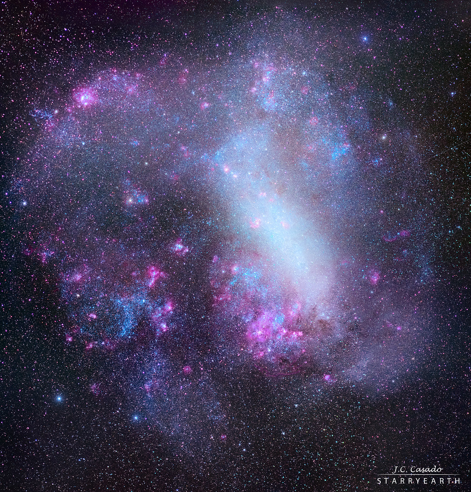

Irregular galaxies are galaxies that don’t fall under any of the three galaxy types mentioned in the other pages. These galaxies tend to be small, dwarf galaxies that lack any distinguishable shape. Many of these galaxies are companions or satellites to larger galaxies.
A fun fact: The Milky Way has dozens of irregular satellite galaxies. Arguably the most famous one is the Large Magellanic Cloud, shown below.
